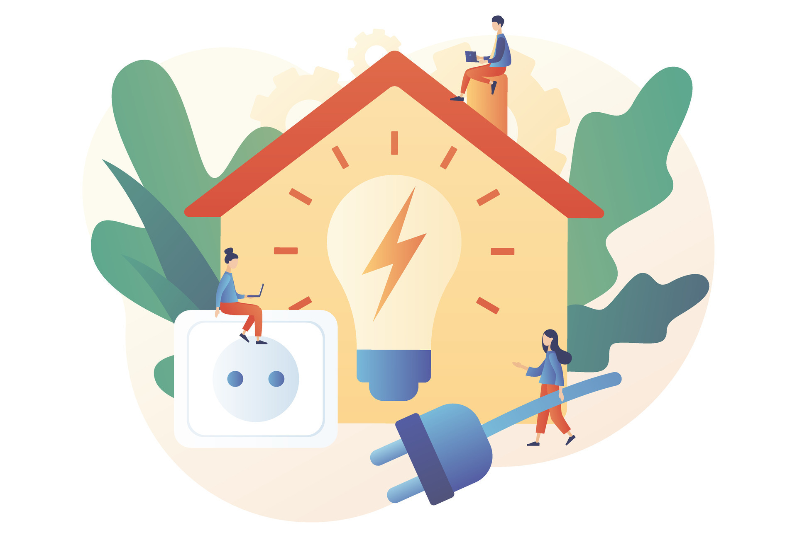

Reducir
Durante mucho tiempo se ha pensado que el cuidado del planeta depende casi por completo de depositar los residuos en el contenedor correcto o de inventar tecnologías limpias que reparen los daños ya causados. Aunque el reciclaje y la innovación son valiosos, la reducción del consumo ocupa el primer lugar en la jerarquía ambiental por una razón sencilla: el residuo o la huella ecológica que no se genera no necesita transportarse, procesarse ni gestionarse después. Reducir implica cuestionar qué compramos, cuánto usamos y qué desechamos con rapidez, transformando la relación cotidiana entre las personas y los recursos naturales.
La mejoría del medio ambiente no depende de un único gesto aislado, sino de la suma de decisiones cotidianas sostenidas en el tiempo. Cuando una persona, una familia o una institución reduce lo que consume y desecha, envía una señal clara sobre el valor de los recursos y demuestra que el bienestar no se mide por la cantidad de cosas acumuladas. Empezar por reducir es una de las formas más directas, accesibles y eficaces de cuidar el entorno hoy y proteger el futuro.
Cuando adoptamos el hábito de reducir, disminuimos de manera directa la presión sobre los bosques, los ríos, los suelos y la biodiversidad. El modelo actual de consumo rápido nos impulsa con frecuencia a comprar por impulso, a reemplazar objetos que todavía funcionan perfectamente y a utilizar productos descartables de un solo uso por simple comodidad. Sin embargo, basta con observar la cantidad de bolsas plásticas, vasos desechables, envolturas y empaques que se acumulan en pocos días en un hogar o en una institución educativa para comprender la magnitud del impacto ambiental que genera el consumo sin medida. Todo ese volumen de basura termina saturando los rellenos sanitarios, contaminando fuentes hídricas y degradando paisajes naturales durante décadas o siglos. Aplicar la reducción en la rutina diaria no significa privarse de lo necesario ni llevar una vida complicada, sino tomar decisiones más conscientes y responsables antes de consumir. En el hogar y en los espacios de estudio o trabajo, reducir implica planificar las compras para adquirir únicamente lo que realmente se va a utilizar, evitar el desperdicio de alimentos conservándolos de manera adecuada, preferir productos duraderos, recargables o con menor cantidad de empaques, y llevar siempre bolsas de tela o recipientes reutilizables al salir de compras. También abarca el uso racional de los servicios básicos, como cerrar la llave mientras nos cepillamos los dientes o enjabonamos, aprovechar la luz natural durante el día, apagar las luces y desconectar los equipos electrónicos que no estén en funcionamiento.
